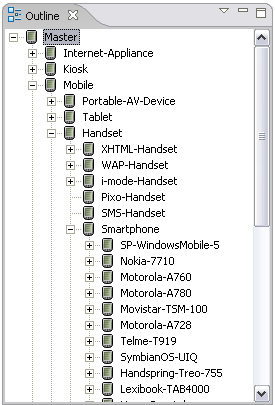

The main types of device in MCS are displayed in a device tree under the root Master device.
The range of devices in your repository will depend on the specific repository that you have selected to view or edit. For example, the installation on your system might be for mobile devices only, or you might be working with a custom repository defined by your organization for specific user groups.
In a full repository the main types are:
You can view the tree in the Device Repository editor, an Outline view, Layout and Theme editors and in a workbench Device Repository view.

Related topic
About devices